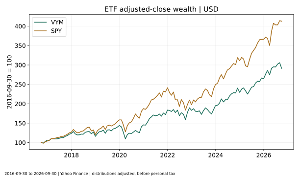
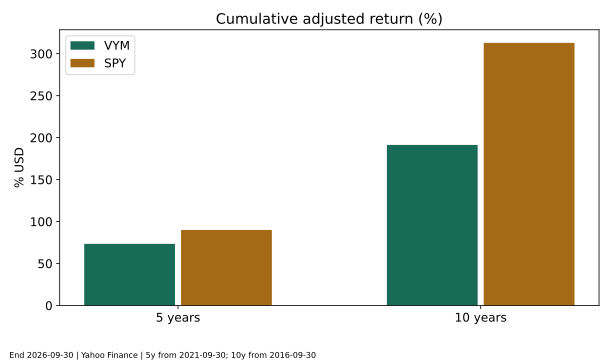
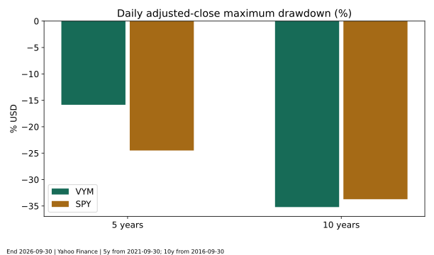
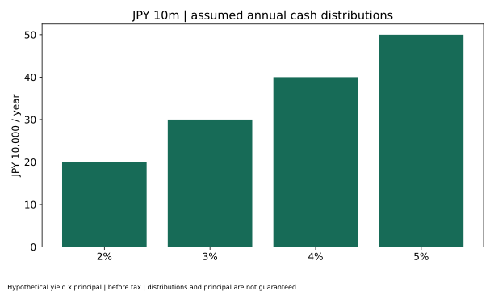
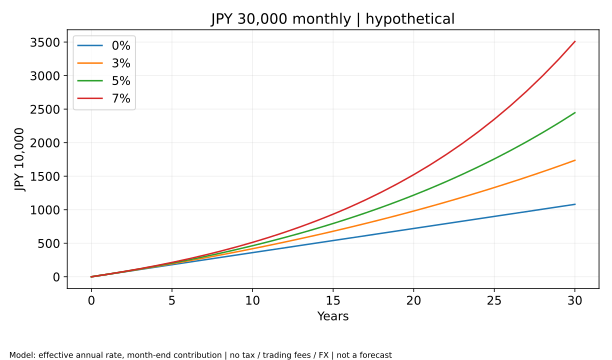
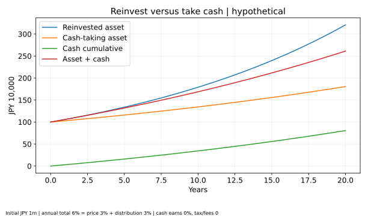
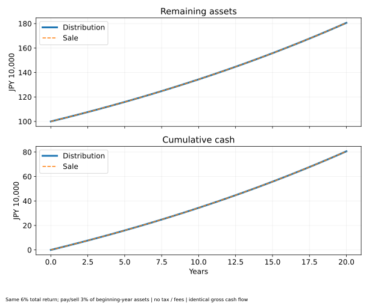

高配当株とインデックス投資はどっちが有利？配当金・20年後の資産・新NISAを徹底比較
公開日・更新日・調査日：2026年11月7日｜執筆・編集：トピック基地編集部
配当金を受け取る安心感と、資産全体を増やす効率は同じではありません。米国の高配当ETF「VYM」とS&P500連動「SPY」の過去実績を比べ、配当・再投資・取り崩しの違いを、再現可能な計算で整理します。
高配当株とインデックス投資は、そもそも違う分類
高配当株投資は、株価に対する配当額の割合が高い企業などを選ぶ投資方針です。インデックス投資は、指数に沿うように銘柄と比率を組む運用方法です。高配当株ETFが指数に連動することもあり、両者は重なります。今回のVYMもその一つです。
配当収入を今の生活費に回したい人と、運用資産を長く増やしたい人では、評価する基準が異なります。前者には現金収入の頻度や安定性、後者には税金・費用を考慮した総収益と分散が重要です。受け取る配当金が多いという理由だけで、20年後の資産額が大きくなるとは限りません。
配当利回りとトータルリターンを分ける
配当利回りは、例えば年間配当30円を株価1,000円で割った3%です。一方、トータルリターンは値上がり・値下がりと配当を合わせた収益です。100万円から年間3万円の分配を受けても、残った資産が90万円なら、単純な合計は93万円です。高い利回りには、株価下落が分母を小さくしている場合もあります。
高配当ETFにも値上がり益があり、SPYのような幅広い指数ETFにも分配金があります。分配金を多く出す商品と、内部で利益を再投資する企業を多く含む商品の違いを、配当の有無だけで判断しないことが出発点です。
比較するETF：VYMとSPYの設計・費用・構成
米国株を対象とする指数連動ETFを2本選び、投資対象地域の大きな違いを抑えました。SCHD、HDV、VOO、VTも選択肢ですが、ここでは複数商品の順位付けや個別推奨を目的にしません。全世界株のVTと米国株だけのETFを同じ性格の商品とみなすことも避けます。
| 項目 | VYM | SPY |
|---|---|---|
| 連動指数 | FTSE High Dividend Yield Index | S&P 500 Index |
| 投資対象 | 米国株・予想配当利回りに着目。REITを除く | 米国の大型株・主要11業種 |
| 設定日 | 2006-11-10 | 1993-01-22 |
| 費用率 | 0.04%（2026-09-30資料） | 0.0945%（2026-11-06表示） |
| 分配頻度 | 四半期 | 四半期 |
| 構成の例 | Broadcom 6.9%、JPMorgan 3.8%、ExxonMobil 2.8%（2026-09-30） | Apple 7.92%、NVIDIA 6.93%、Microsoft 6.27%（2026-11-05） |
| 主要業種 | Financials 20.4%、Technology 14.3%、Industrials 13.6%（2026-09-30） | Information Technology 35.54%、Financials 12.77%、Health Care 10.56%（2026-11-05） |
VYMは593銘柄を保有していても、米国株の中の特定の選別方針です。SPYは高配当を条件にせず、大型株市場を広く捉えますが、時価総額の大きな企業への集中は残ります。上位銘柄は重なることがあり、2本を持つだけで別の資産クラスに分散できるわけではありません。
構成データは資料の基準日が違い、業種分類も同一とは限りません。上の主要3業種はそのまま横並びの厳密な業種配分差の計算には使わず、性格の説明にとどめます。米国企業も海外で売上を得ており、上場・組入対象国と売上地域は別です。費用率は現在値で、過去10年ずっと同じではありません。Vanguard公式ファクトシート、State Street公式商品情報。
過去実績の比較条件と計算方法
調査・取得日は2026年11月7日（取得記録はUTC）、比較の最終日は、共通して完了した四半期末の2026年9月30日です。10年は2016年9月30日〜2026年9月30日、5年は2021年9月30日〜2026年9月30日。両ETFの設定後だけを分析しています。
- 価格データはYahoo FinanceのVYM・SPYの日次終値と調整後終値、分配金イベント。取引日ラベルは米国市場の営業日で、日時そのものはUTCで保存されたAPI値です。日中の最高値・最安値や日本時間の終値ではありません。
- すべて米ドル建て、個人の税金・売買手数料・為替スプレッドを引く前です。ETF費用は実際の価格に反映されているため、現在の費用率を再度控除しません。円換算の過去実績や国内投資信託の実績とは異なります。
- 価格リターン＝最終終値÷開始終値−1。分配金調整後の累積リターン＝最終調整後終値÷開始調整後終値−1。CAGR＝同じ比率の（1÷年数）乗−1です。
- 調整後終値は、分配落ち日前日の終値と分配金から作る遡及調整係数で独立に照合しました。今回の取得範囲で株式分割イベントはありません。個人課税前の分配金再投資を近似する市場価格ベースの系列であり、公式NAVリターンそのものではありません。
- 最大下落率は日次調整後終値の、その日までの高値に対する下落率の最小値です。変動率は月末の調整後終値リターンの標本標準偏差×√12。月次の大きさを年率換算した記述統計で、損失の上限や将来の変動を保証しません。
10年の共通日次観測は2,513件、5年は1,255件。月末観測はそれぞれ121件、61件です。年間騰落率は前年の最終取引日から当年の最終取引日まで。2026年は9月までの途中経過を分け、年率換算していません。
出典：VYM価格・分配金API、SPY価格・分配金API。取得日時・URL・SHA-256記録、再現手順を公開しています。第三者価格データは発行会社の原データそのものではありません。
過去5年・10年：分配金込み実績と価格だけの実績
横に収まらない表は左右にスクロールできます。
| ETF・期間 | 価格だけの騰落率 | 分配金調整後累積 | CAGR | 最大下落率 | 高値→底値 | 月次標本標準偏差×√12 |
|---|---|---|---|---|---|---|
| VYM・10年 | 115.14% | 191.28% | 11.28% | -35.21% | 2020-01-17→2020-03-23 | 14.24% |
| VYM・5年 | 50.17% | 73.43% | 11.64% | -15.84% | 2022-04-20→2022-09-30 | 13.92% |
| SPY・10年 | 252.58% | 312.86% | 15.23% | -33.72% | 2020-02-19→2020-03-23 | 15.33% |
| SPY・5年 | 77.71% | 90.00% | 13.70% | -24.50% | 2022-01-03→2022-10-12 | 15.67% |


この10年の調整後CAGRはVYMが11.28%、SPYが15.23%、5年では11.64%と13.70%でした。この期間ではSPYが上回りましたが、開始・終了時点、業種の好不調、評価水準によって差は変わります。配当収入の多さと資産成長の順位は一致しません。
発行会社の公表値との照合
Vanguardの2026年9月30日資料の市場価格年率は5年11.64%、10年11.28%で、当分析の小数第2位まで一致します。State Streetの同日市場価格年率は5年13.65%、10年15.18%で、当分析との差は約0.05ポイントあります。分配落ちを調整するYahoo系列と、発行会社の市場価格リターンの算定・再投資価格は同一ではないため、同じ値として置き換えません。公式値は商品ページ、当分析の数値は保存したYahoo系列という出典を分けています。公式NAVや個人の実現損益への厳密な一致は保証しません。
独立検算は「保存データに対して計算が正しい」ことと「分配調整がイベントと整合する」ことを検証するもので、過去価格をあらゆる提供元に一致させたという意味ではありません。
横に収まらない表は左右にスクロールできます。
| 年 | 観測端点 | VYM | SPY |
|---|---|---|---|
| 2017年 | 2016-12-30→2017-12-29 | 16.42% | 21.71% |
| 2018年 | 2017-12-29→2018-12-31 | -5.92% | -4.57% |
| 2019年 | 2018-12-31→2019-12-31 | 24.06% | 31.22% |
| 2020年 | 2019-12-31→2020-12-31 | 1.14% | 18.33% |
| 2021年 | 2020-12-31→2021-12-31 | 26.20% | 28.73% |
| 2022年 | 2021-12-31→2022-12-30 | -0.43% | -18.18% |
| 2023年 | 2022-12-30→2023-12-29 | 6.57% | 26.18% |
| 2024年 | 2023-12-29→2024-12-31 | 17.60% | 24.89% |
| 2025年 | 2024-12-31→2025-12-31 | 15.42% | 17.72% |
| 2026年1〜9月 | 2025-12-31→2026-09-30 | 10.06% | 12.71% |
年別表を見ると、期間全体の勝敗と各年の勝敗が異なります。高配当方針が有利だった年だけを取り出したり、成長株が上昇した年だけで今後も同じ差が続くと考えたりするのは避けたい判断です。
最大下落率と、両方のメリット・デメリット

10年の最大下落率はVYMが約35.21%、SPYが約33.72%でした。高配当という名称でも株式市場全体の急落を避けられるとは限りません。5年では約15.84%と24.50%で順位が逆になるため、特定期間だけで「常に安全」と結論付けられません。
高配当方針の長所と弱点
定期的な現金収入を資金計画に組み込みやすく、収益を株価上昇だけに頼らない点が魅力です。一方、配当額は固定ではなく減配・無配があり、利回りだけで選ぶと業績が悪化した銘柄を多く持つ可能性があります。業種偏り、税引後の再投資効率、資金が必要になる時期と分配時期のずれも確認が必要です。
幅広い指数投資の長所と弱点
個別企業の選別負担を減らし、多数の企業の成長や配当をまとめて保有できます。低コスト商品を選びやすい一方、指数全体が下がれば損失が出ます。米国株指数は世界全体への分散ではなく、時価総額加重では一部大企業の影響が大きくなります。分散と元本保証は別です。
両方に共通するリスクには、企業収益の悪化、株式市場の下落、為替変動、金利変化、ETFの売買価格と基準価額の乖離、取引時のスプレッドがあります。ドルでプラスでも円高で円換算益が減ることがあります。このページのUSD実績を、そのまま日本円の手取りに読み替えないでください。
配当利回りの比較と1,000万円の受取額
実データの利回りは、2025年9月30日より後〜2026年9月30日までの1株分配金合計を、2026年9月30日の終値で割った過去12か月ベースです。VYMは3.676米ドル÷終値で約2.37%、SPYは7.583米ドル÷終値で約0.99%でした。SEC利回りや将来予想利回りとは別の指標です。税引後利回りではなく、四半期ごとの分配額も同額とは限りません。
この過去利回りを1,000万円に掛けるだけの参考換算では年約23.7万円と約9.9万円です。実際には購入時の価格・為替、端数株の可否、保有株数、将来の分配額で変わるため、将来の受取額の約束ではありません。以下は商品実績から離れ、2〜5%を仮定した円の算術表です。
横に収まらない表は左右にスクロールできます。
| 投資額 | 仮定配当利回り | 年額 | 月平均 |
|---|---|---|---|
| 100万円 | 2.00% | 20,000円 | 1,666.67円 |
| 100万円 | 3.00% | 30,000円 | 2,500.00円 |
| 100万円 | 4.00% | 40,000円 | 3,333.33円 |
| 100万円 | 5.00% | 50,000円 | 4,166.67円 |
| 300万円 | 2.00% | 60,000円 | 5,000.00円 |
| 300万円 | 3.00% | 90,000円 | 7,500.00円 |
| 300万円 | 4.00% | 120,000円 | 10,000.00円 |
| 300万円 | 5.00% | 150,000円 | 12,500.00円 |
| 500万円 | 2.00% | 100,000円 | 8,333.33円 |
| 500万円 | 3.00% | 150,000円 | 12,500.00円 |
| 500万円 | 4.00% | 200,000円 | 16,666.67円 |
| 500万円 | 5.00% | 250,000円 | 20,833.33円 |
| 1000万円 | 2.00% | 200,000円 | 16,666.67円 |
| 1000万円 | 3.00% | 300,000円 | 25,000.00円 |
| 1000万円 | 4.00% | 400,000円 | 33,333.33円 |
| 1000万円 | 5.00% | 500,000円 | 41,666.67円 |

年率4%なら年40万円、月平均約3万3,333円です。ただし「月平均」は年額を12で割っただけです。VYM・SPYはいずれも四半期分配で、毎月同じ金額が口座に入る仕組みではありません。現金が必要な月には、預金などで支払時期のずれを調整する必要があります。
元本を減らさずに一定の生活費を永続的に受け取れるという試算でもありません。分配金が支払われても株価や円換算額が下がる場合があります。
毎月3万円を10年・20年・30年積み立てる仮定計算
各月末に3万円を拠出し、実効年率0・3・5・7%が毎年一定と仮定しました。月利は（1＋年率）の1/12乗−1。開始時資産ゼロ、税金・売買手数料・為替変化なし、運用中の費用を考慮した後の仮定利回りとして計算します。途中の丸めはせず、表示時に円単位へ丸めています。分配金を別途足していません。
これはVYMやSPYの将来予測ではありません。同じ総収益率を与えれば、配当の多い少ないにかかわらず、全額再投資する数理モデルの結果は同じになります。過去5年・10年のCAGRを20年先まで延長する方法は採っていません。
横に収まらない表は左右にスクロールできます。
| 期間 | 仮定年率 | 元本 | 評価額 | 元本との差 |
|---|---|---|---|---|
| 10年 | 0.00% | 3,600,000円 | 3,600,000円 | 0円 |
| 10年 | 3.00% | 3,600,000円 | 4,183,440円 | 583,440円 |
| 10年 | 5.00% | 3,600,000円 | 4,630,895円 | 1,030,895円 |
| 10年 | 7.00% | 3,600,000円 | 5,131,552円 | 1,531,552円 |
| 20年 | 0.00% | 7,200,000円 | 7,200,000円 | 0円 |
| 20年 | 3.00% | 7,200,000円 | 9,805,633円 | 2,605,633円 |
| 20年 | 5.00% | 7,200,000円 | 12,174,135円 | 4,974,135円 |
| 20年 | 7.00% | 7,200,000円 | 15,226,091円 | 8,026,091円 |
| 30年 | 0.00% | 10,800,000円 | 10,800,000円 | 0円 |
| 30年 | 3.00% | 10,800,000円 | 17,361,391円 | 6,561,391円 |
| 30年 | 5.00% | 10,800,000円 | 24,461,277円 | 13,661,277円 |
| 30年 | 7.00% | 10,800,000円 | 35,083,578円 | 24,283,578円 |

20年の積立元本は720万円です。運用期間が長いほど複利の効果は大きくなりますが、長く保有すれば必ず利益が出るわけではありません。生活防衛資金や近い将来の支出を先に確保し、途中の下落にも続けられる積立額を決めることが重要です。
再投資と受取：二重計上を避けた比較
初期100万円、年総収益率6%を、価格上昇3%＋年初資産に対する年末分配3%に分けた20年モデルです。これは説明用の一定利回りで、両ETFの実績や配当予想ではありません。税金・手数料ゼロ、受け取った現金は利息ゼロで保管し、消費しないと仮定します。
再投資型は翌年資産＝前年資産×1.06。受取型は翌年運用資産＝前年運用資産×1.03、受取現金＝前年運用資産×0.03です。総収益6%にさらに配当3%を足して9%とする計算はしません。受取型では残高だけを見ると過小評価になるので、受取累計と合計も示します。現金を使えば、その分は資産には残りません。
横に収まらない表は左右にスクロールできます。
| 経過 | 全額再投資 | 受取型運用残高 | 受取累計 | 残高＋受取累計 | 売却型運用残高 | 売却受取累計 |
|---|---|---|---|---|---|---|
| 0年 | 1,000,000円 | 1,000,000円 | 0円 | 1,000,000円 | 1,000,000円 | 0円 |
| 10年 | 1,790,848円 | 1,343,916円 | 343,916円 | 1,687,833円 | 1,343,916円 | 343,916円 |
| 20年 | 3,207,135円 | 1,806,111円 | 806,111円 | 2,612,222円 | 1,806,111円 | 806,111円 |

分配落ちと課税を忘れない
他の条件が同じなら、分配によりファンドから現金が外へ出た分だけ基準価額などは調整されます。相場変動も同時に起きるため、実際の市場価格が分配額だけ機械的に下がるとは限りません。受取と売却は手続が違っても、分配自体が追加の富を生むわけではありません。
課税口座では分配の都度課税されることで再投資原資が減り、売却益の課税繰延べとは結果が異なり得ます。再投資にも売買単位、手数料、購入時期の問題があります。この表はそれらを除いた資金保存の比較で、税引後の個人差を消した結論ではありません。
分配金を受け取る方法と、資産を売却する方法
同じ年総収益6%の資産について、年初残高の3%を年末に受け取るとします。分配型は価格上昇後に3%相当を分配し、売却型は総収益を資産内に残した後、年初残高の3%相当を売却します。どちらも期末残高は年初残高×1.06−年初残高×0.03です。

この条件では残高と累計現金が一致します。一方、現実には分配時期・額は自分で自由に決められず、売却には数量・注文・取引費用などの判断が必要です。課税口座の売却は原則として売却代金全額ではなく利益部分が課税対象なので、配当課税とは手取りが違うこともあります。
「年初残高の3%」は毎年一定額の取り崩しではありません。暴落時は翌年の受取額も小さくなり得ます。固定した生活費を確保するモデルや、資産が尽きる確率を求める計算ではなく、順序リスクも評価していません。現金収入の取り方と、投資先の総収益リスクは分けて考えましょう。
税金と新NISA：国内非課税と外国課税を分ける
2026年11月7日に確認した資料に基づき、以下は適用中の一般的な制度を説明します。国税庁の該当ページは令和8年4月1日現在法令等と表示されています。将来の改正案を現在の税率として使わず、今後の変更にも注意してください。個別の税務判断は税務署や税理士に確認してください。
国内上場株の配当と売却益
一般的な個人が受け取る国内上場株式等の配当は、所得税・復興特別所得税15.315%と住民税5%を合わせて20.315%が源泉徴収されます。大口株主等には例外があります。申告不要の選択、総合課税、申告分離課税の扱いがあり、配当控除や譲渡損失との通算の可否も課税方式で変わります。国税庁No.1330、No.1331。
株式等の売却益は原則として申告分離課税で、課税されるのは収入から取得費・委託手数料等を差し引いた利益です。保有中の含み益に、売却益課税が毎年発生するという意味ではありません。源泉徴収あり特定口座など、申告の要否には条件があります。国税庁No.1463。
新NISAの対象枠と配当金の受取方式
NISAでは対象商品の配当・分配金や売却益が日本で非課税となります。年間投資枠はつみたて投資枠120万円、成長投資枠240万円、非課税保有限度額は計1,800万円（成長投資枠はうち1,200万円）。非課税保有期間は無期限です。対象商品や利用条件は枠によって異なります。金融庁のNISA制度説明。
国内上場株式・ETF等の配当・分配金をNISAで非課税にするには、原則として証券会社で受け取る「株式数比例配分方式」を選ぶ必要があります。銀行口座などで受け取る方式と混同しないでください。外国上場株式の取扱いにこの国内の受取方式をそのまま当てはめることもできません。分配金を口座で受け取り再購入する場合は、原則として新たな買付として投資枠を使います。ファンド内部の再投資と別です。日本証券業協会NISA Q&A（2026年9月、Q19〜22・Q35〜36）。
今回のVYM・SPYについて、個別の金融機関でのNISA購入可否までは認定していません。海外ETFがすべての枠で買えるわけではありません。最新の対象商品一覧・取扱証券会社を確認してください。売却後の非課税保有限度額の再利用は簿価分が翌年以降で、その年の年間投資枠が直ちに増えるという意味ではありません。
米国ETFの現地源泉徴収と外国税額控除
外国株・米国ETFの分配金では、外国での源泉徴収と日本での課税は別の段階です。日本のNISAで非課税でも、外国側の税が自動的にゼロになるわけではありません。現地税率や条約の適用、分配の区分などに条件があるため、ここでは一律の手取率を仮定していません。
課税口座では外国税額控除を利用できる場合がありますが、確定申告、控除限度額、外国所得税に該当するかなどの条件があります。外国税が必ず全額戻る制度ではありません。NISAで日本の課税がない分に外国税額控除を使えると考えないでください。国税庁No.1240、SBI証券の外国株配当・NISAの取扱説明。証券会社のFAQは実務の補足で、税法の根拠は国税庁資料と区別します。
国内投資信託の分配金とETFの違い
国内公募株式投資信託には、課税対象の普通分配金と、個別元本を下回る部分の元本払戻金（特別分配金）があります。後者の非課税は利益に特別な優遇が付くからではなく、元本の払い戻しだからです。海外ETFの分配金に、この区分をそのまま適用しないでください。国内ファンド内部での再投資、国内ファンドが現金を分配する場合、米国上場ETFの分配は仕組み・税処理が異なります。日本証券業協会NISA Q&A（Q37〜38）。
長期資産形成・老後収入・併用をどう考えるか
長期の資産形成を優先するなら、低コストで分散した運用を基本に、受け取った分配を再投資しやすいか、税引後にどれだけ残るかを確認します。配当利回りの高さだけで商品を選ぶ必要はありません。
生活費の補助を優先するなら、額面配当ではなく、税・為替を考慮した手取りと入金時期を確認します。現金の予備資金を設ければ、分配の季節差や一時的な減配を吸収しやすくなります。配当だけで生活費を賄う計画でも、資産価格の下落やインフレで購買力が下がるリスクは残ります。
併用する場合は、どちらを何のために持つのかを決め、重複する米国大型株と業種への偏りを合算します。配当金を受け取る満足感が投資継続に役立つ人もいれば、少額の分配を再投資する手間が負担になる人もいます。誰にでも同じ最適比率があるとはいえません。
指数の地域差はS&P500とオルカンの比較、非課税枠の基本は新NISAの初心者向けガイドをご覧ください。価格上昇以外の評価軸として、インフレを考慮した実質リターンも参考になります。
よくある質問
- 高配当ETFはインデックス投資ではないのですか？
- 指数に連動する高配当ETFもあります。VYMはFTSE High Dividend Yield Indexに連動します。「配当を重視する選別方針」と「指数に連動する運用方法」は別の軸です。
- 高配当なら暴落しても安心ですか？
- 減配や株価下落はあります。当分析の10年最大下落率はVYMの方がSPYより大きく、高配当という名称だけで低リスクとは判断できません。
- 1,000万円あれば毎月一定の配当を受け取れますか？
- 年率や支払日次第です。VYM・SPYは四半期分配で、月平均は年間額の12分の1にすぎません。将来の配当額と元本は保証されません。
- 20年積み立てるなら、どちらが必ず増えますか？
- 分かりません。過去の実績と仮定の積立計算は別です。20年の試算には固定利回りを置いており、実際の変動や為替、個人課税を再現していません。
- NISAなら米国ETFの配当も完全に無税ですか？
- 日本での非課税と外国の源泉徴収は別です。購入可能な枠・商品、現地の課税、金融機関の扱いを確認してください。
- 配当と売却による取り崩しは同じですか？
- 同じ総収益・同じ現金流出・税費用ゼロなら残高を一致させられます。実際には課税対象額、支払時期、売却数量の調整などが異なります。
- 両方買えば十分に分散できますか？
- どちらも米国株を中心とし、組入銘柄も重なります。保有本数より、国・業種・銘柄・資産クラスの合算で確認しましょう。
まとめ：配当の多さと総収益を分けて判断する
比較した過去5年・10年ではSPYの分配金調整後リターンが高く、VYMの過去12か月分配利回りが高い結果でした。これは選んだ期間の観測結果で、将来の優劣を保証しません。高配当方針の価値を考えるときは、現金収入だけでなく、残った資産・再投資・税金・下落への耐性を合わせて評価する必要があります。
資産を育てる期間と、生活費として取り出す期間では、必要な設計が変わります。手取り収入の計画と総収益の比較を分け、自分の支出時期・許容できる損失・分散方針に沿って選びましょう。
本記事は一般的な情報提供で、個別の投資・税務助言ではありません。執筆・編集はトピック基地編集部です。資格や第三者監修を称するものではありません。編集・訂正の方針は運営者情報、誤りの連絡はお問い合わせをご利用ください。
参考資料と再現用ファイル
重要な数値と制度は上記の本文リンクに対応します。国税庁ページの法令基準日は2026年4月1日、記事の調査日は2026年11月7日です。資料の改訂・訂正がある場合は再確認します。
- Vanguard VYM公式ファクトシート：2026-09-30、指数・設定日・費用・構成・市場価格リターン
取得：2026-11-07T02:56:58.695449+00:00（UTC） - Yahoo Finance VYM日次価格・調整後価格・分配イベント
取得：2026-11-07T02:56:58.735179+00:00（UTC） - Yahoo Finance SPY日次価格・調整後価格・分配イベント
取得：2026-11-07T02:56:58.686809+00:00（UTC） - State Street SPY：設定日・費用・分配頻度・構成・公表リターン（構成2026-11-05、費用2026-11-06）
取得：2026-11-07T02:56:58.636761+00:00（UTC） - 国税庁No.1330 配当金を受け取ったとき
取得：2026-11-07T02:56:59.096090+00:00（UTC） - 国税庁No.1331 上場株式等の配当等に係る申告分離課税制度
取得：2026-11-07T02:56:59.218907+00:00（UTC） - 国税庁No.1463 株式等を譲渡したときの課税
取得：2026-11-07T02:56:59.456249+00:00（UTC） - 国税庁No.1240 居住者に係る外国税額控除
取得：2026-11-07T02:56:59.603393+00:00（UTC） - 金融庁 NISAを知る
取得：2026-11-07T02:56:59.167345+00:00（UTC） - 日本証券業協会 NISA Q&A（2026年9月）
取得：2026-11-07T02:56:59.829485+00:00（UTC） - SBI証券 外国株式の配当金は外国税額控除の適用を受けられますか
取得：2026-11-07T02:56:59.961587+00:00（UTC）